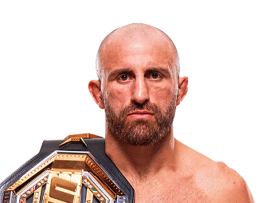

Alexander Volkanovski es un peleador australiano de artes marciales mixtas nacido el 29 de septiembre de 1988 en Australia. Antes de entrar al MMA fue jugador de rugby, deporte que le ayudó a desarrollar gran fuerza física y resistencia. Volkanovski se convirtió en campeón de peso pluma de la UFC y es considerado uno de los mejores peleadores libra por libra del mundo. Es reconocido por su inteligencia táctica, resistencia y habilidades completas en todas las áreas del combate.

Alexander Volkanovski es conocido por su inteligencia dentro del octágono y su capacidad para adaptarse a cualquier rival. Posee un striking técnico, buena defensa de derribos y gran cardio, lo que le permite mantener un ritmo alto durante toda la pelea.
Volkanovski es considerado uno de los campeones más completos en la historia de la división peso pluma.